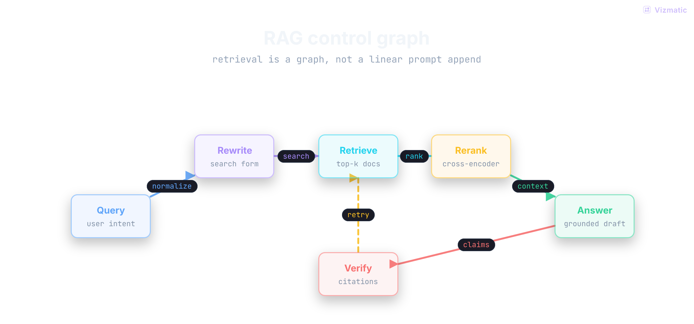
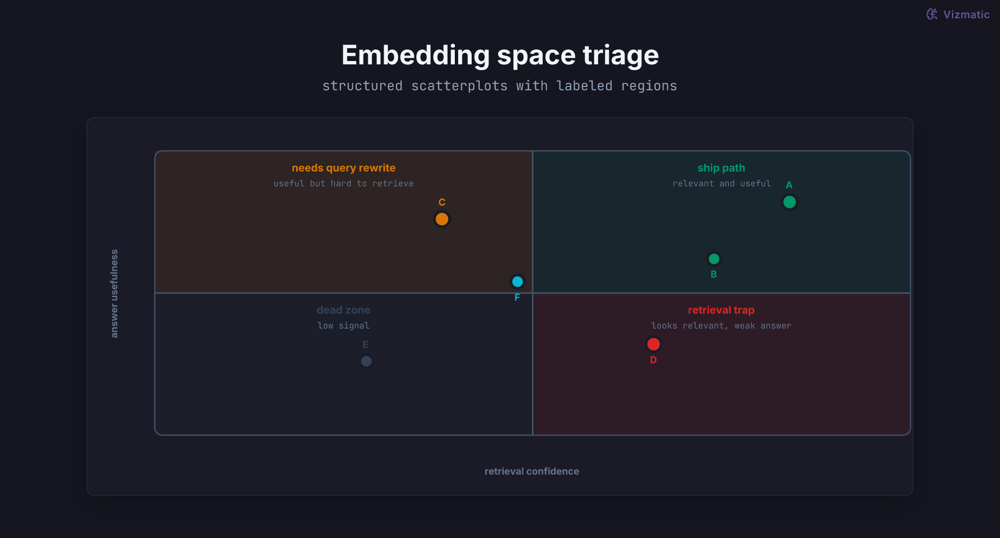
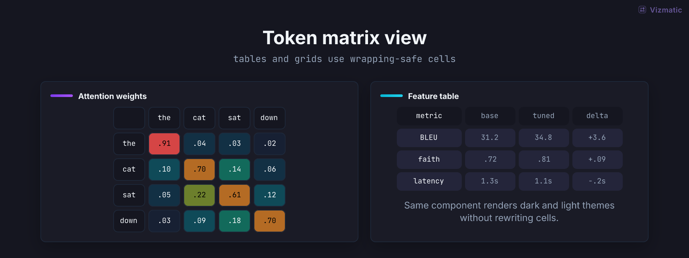
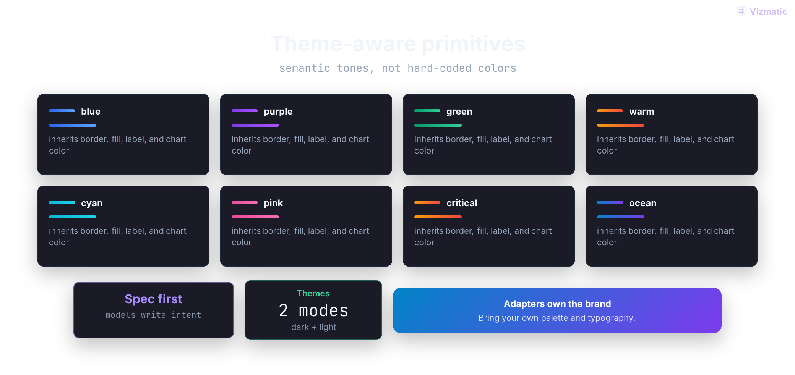
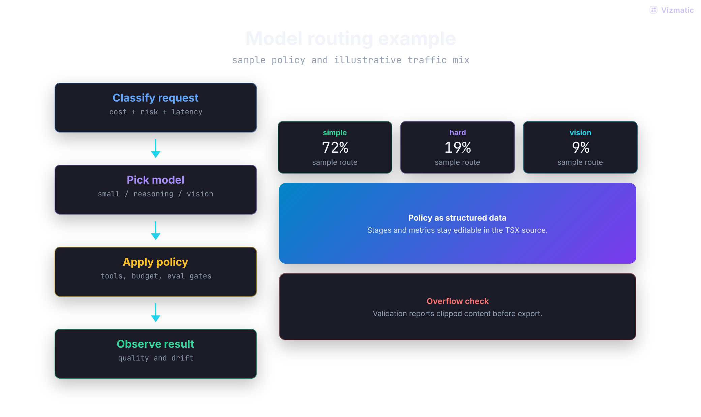
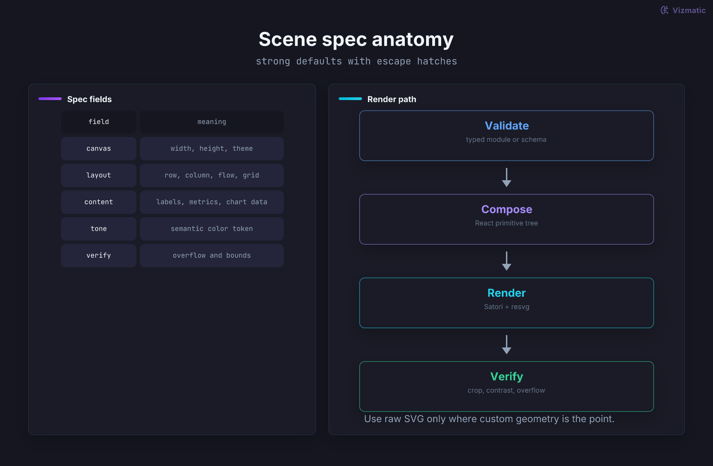
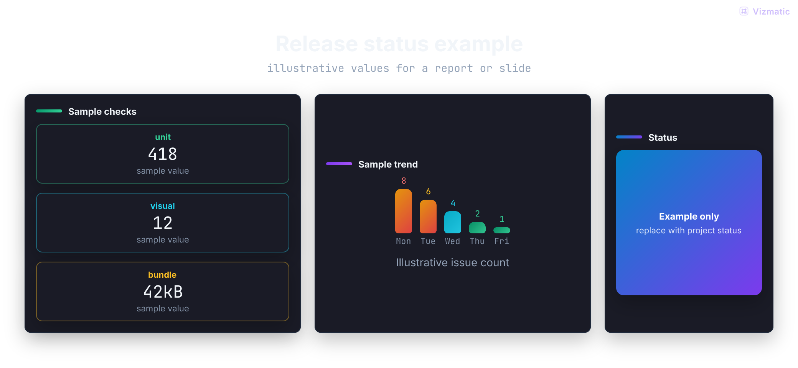

13example frames
2xretina PNG output
GIFanimated export
2built-in themes
Gallery
One primitive system, many visual forms.
Examples are generated by this repo during CI using the public package API.

Attention head

RAG graph

Evaluation dashboard

Embedding map

Token matrix

Theme system

Presentation frame

Model router

Spec anatomy

Research landscape

Release card
Agent pipeline
API
Write scenes, not SVG paths.
Use React primitives with semantic tones. Render to PNG in Node for docs, websites, or generated decks.
import { defineIllustration, Flow, Scene } from "vizmatic"
export const width = 1040
export const height = 560
const frame = defineIllustration((c) =>
<Scene c={c} title="Agent pipeline">
<Flow c={c} stages={[
{ title: "Prompt", tone: "blue" },
{ title: "Scene spec", tone: "purple" },
{ title: "PNG / GIF", tone: "green" },
]} />
</Scene>
)
export const create = frame.create
export default frame.default
Animated GIF
Export motion from the same scene language.
Static frames use `create(theme)`. Animated frames export `createScenes(theme)` and render with `vizmatic gif`. Perfect for showing state machines, learning steps, product flows, and release timelines.
export function createScenes(theme) {
return [
{ element: step(theme, 0), duration: 760, transition: "appear" },
{ element: step(theme, 1), duration: 760, transition: "fade" },
{ element: step(theme, 2), duration: 1100, transition: "fade" },
]
}
vizmatic gif frames/animated.tsx --out public/vizmatic --theme dark,light --brand Acme
Recipes
Copy a frame, swap the content, render.
These are the same patterns used by the generated gallery. Agents should start here before writing custom SVG.
Flow + callouts
Best for process diagrams, architecture walkthroughs, and agent pipelines.
import { CalloutCard, defineIllustration, Flow, Row, Scene } from "vizmatic"
export const width = 1040
export const height = 560
const frame = defineIllustration((c) => (
<Scene c={c} title="Agent visual pipeline">
<Flow c={c} connectorTone="purple" stages={[
{ title: "Prompt", subtitle: "intent", tone: "blue" },
{ title: "Scene spec", subtitle: "typed structure", tone: "purple" },
{ title: "PNG / GIF", subtitle: "verified asset", tone: "green" },
]} />
<Row gap={14} width="100%">
<CalloutCard c={c} tone="purple" title="Model writes structure" />
<CalloutCard c={c} tone="green" title="Theme stays in control" />
</Row>
</Scene>
))Graph diagram
Best for branches, retries, validation loops, and systems with non-linear flow.
import { defineIllustration, GraphDiagram, Scene } from "vizmatic"
const frame = defineIllustration((c) => (
<Scene c={c} title="RAG control graph" align="center">
<GraphDiagram
c={c}
width={820}
height={390}
nodes={[
{ id: "query", label: "Query", x: 0.08, y: 0.52, tone: "blue" },
{ id: "retrieve", label: "Retrieve", x: 0.40, y: 0.25, tone: "cyan" },
{ id: "answer", label: "Answer", x: 0.92, y: 0.52, tone: "green" },
]}
edges={[
{ from: "query", to: "retrieve", label: "search", tone: "blue" },
{ from: "retrieve", to: "answer", label: "context", tone: "green" },
]}
/>
</Scene>
))Dashboard charts
Best for report figures, eval summaries, launch reviews, and release decks.
import { BarChart, defineIllustration, LineChart, Row, Scene } from "vizmatic"
const frame = defineIllustration((c) => (
<Scene c={c} title="Evaluation snapshot">
<Row gap={18} align="stretch">
<BarChart c={c} title="Pass rate" format="percent" data={[
{ label: "tools", value: 0.82, color: "positive" },
{ label: "long", value: 0.58, color: "warning" },
]} />
<LineChart c={c} title="Quality" format="percent" labels={["v1", "v2"]} series={[
{ name: "quality", points: [0.61, 0.81], color: "positive", area: true },
]} />
</Row>
</Scene>
))
Agent Prompt
Paste this into Codex, Claude Code, Cursor, or any coding agent.
It teaches the agent how to install Vizmatic, choose primitives, write frames, render dark/light PNGs, export GIFs, and fix overflow errors.
# Vizmatic Agent Prompt
Use Vizmatic to create polished, theme-aware diagrams, figures, dashboards, presentation frames, and animated GIFs from structured React scene primitives.
Install:
pnpm add vizmatic react
Fallback before npm publish:
pnpm add github:bvolpato/vizmatic react
Create frames/*.tsx, export width/height, use defineIllustration, render with:
pnpm exec vizmatic render frames --out public/vizmatic --theme dark,light --brand "Your Product"
For animation, export createScenes(theme), then run:
pnpm exec vizmatic gif frames/animated-pipeline.tsx --out public/vizmatic --theme dark,light --brand "Your Product"
Themes
Semantic tones, portable brand adapters.
Primitives consume tokens like positive, critical, purple, and cyan. Swap palettes without rewriting diagrams. Render dark and light variants from the same frame module.
- Shared typography and spacing
- Wrapping-safe labels and cards
- Overflow detection before files are written
- Optional brand mark per render